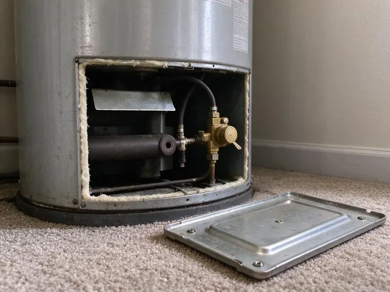

Water Leak Repair in Rogers, AR
Hidden leaks waste water and invite mold. Our plumbers in Rogers, AR use acoustic and thermal tools to pinpoint the leak and fix it quickly.
- Minimal Wall and Floor Damage
- Acoustic and Thermal Detection
- Skilled Pipe Repair
- Insurance Documentation Included

Find the leak, fix the leak, protect your home in Rogers, AR.
Contact DGR Plumbing today for expert service and peace of mind about your home's plumbing.
Trusted Water Leak Repair in Rogers, AR
DGR Plumbing specializes in comprehensive water leak repair for homes across Rogers, AR. We understand the challenges Arkansas properties face, from shifting soil causing slab leaks to temperature swings affecting pipes. Rocky, shallow soil in hilly parts of Arkansas makes trenching harder and can add time on sewer and water line replacements. Our technicians are equipped with modern tools like acoustic leak detectors to pinpoint the problem quickly and accurately.
Our expertise includes:
- Slab Leak Location and Repair
- Acoustic ground microphones and thermal imaging for hidden leaks
- PEX, Copper, and PVC Pipe Repair

Additional Plumbing Repair Services in Rogers, AR
We offer expert plumbing repair services across Rogers, AR to stop leaks, clear blockages, and keep every fixture working the way it should.


Customers
Why Choose DGR Plumbing for Water Leak Repair in Rogers, AR?
Finding a leak early keeps the repair small and the damage contained. Our detection tools let us cut one small access hole instead of several large ones.
- Insurance Friendly, We provide photos, findings and itemized invoices to support any insurance claim.
- Durable Repairs, We use high-quality materials and proven techniques to ensure our repairs are robust and long-lasting, meeting local Rogers codes.
- Root Cause Fixes, We check water pressure and the pressure regulator, which often contribute to repeat leaks.
Citywide Coverage
DGR Plumbing serves every neighborhood in Rogers for water leak repair, understanding that leaks can strike anywhere, anytime. Our local teams are familiar with the various housing styles and plumbing systems common throughout the area, from historic homes to new construction.
Experienced Team
Each DGR Plumbing technician is a skilled professional, equipped with the knowledge and tools to accurately diagnose and fix any water leak. Their expertise means that whether it's a pinhole leak in a copper pipe or a burst PEX line, the repair is done right the first time.
Safety-First Approach
When DGR Plumbing repairs a water leak, we prioritize the safety of your home and family. Our methods are designed to prevent further damage, mitigate mold risks, and ensure that all plumbing work meets the highest industry standards and Arkansas regulatory requirements.
Trusted Certified Rogers Plumbing Services Professionals
At DGR Plumbing, we take pride in providing licensed, certified plumbing services throughout Rogers, AR. Backed by recognized industry credentials, our experienced plumbers combine technical skill with genuine customer care. Whether it is repair, installation, or maintenance, we follow strict safety and quality standards to deliver long-lasting results you can trust.
Call Us Now PHCC Plumbing Contractor Recognition
PHCC Plumbing Contractor Recognition Better Business Bureau (BBB) Accreditation
Better Business Bureau (BBB) Accreditation Angi Certified Pro
Angi Certified Pro ISO 9001 Quality Management Certification
ISO 9001 Quality Management CertificationReliable Water Leak Repair Services in Rogers, AR
Slab Leak Detection & Repair in Rogers
Slab leaks are common where soil shifts and puts stress on pipes embedded in concrete foundations. Rocky, shallow soil in hilly parts of Arkansas makes trenching harder and can raise the cost on sewer and water line replacements. We use non-invasive acoustic and thermal imaging equipment to pinpoint the exact location of the leak beneath your home's foundation in Rogers. Our repair options range from targeted slab penetration to re-routing the affected line, minimizing disruption and protecting your foundation from further damage. We work with all types of piping found in slab foundations, including copper and PEX, delivering a durable fix that complies with local building codes.

Yard and Main Line Leak Repair in Rogers, AR
The service line between the meter and your house can crack from rocky soil, roots or ground movement. Rocky, shallow soil in hilly parts of Arkansas makes trenching harder and can raise the cost on sewer and water line replacements. Wet spots in the yard, sinkholes or very green patches are typical signs. We locate the leak, excavate carefully and replace the damaged section with copper or approved plastic pipe. For long or deep lines, a new trenchless line may be the better value.
Fixture Leak Repair in Rogers
Leaky faucets, toilets, and showers might seem minor, but they waste a lot of water and can lead to higher utility bills and mold growth. We repair or replace faulty washers, gaskets, O-rings, and cartridges in all major brands, including Moen, Delta, Kohler, and American Standard. Our plumbers confirm proper sealing and function, stopping the drips and restoring efficient water usage throughout your Rogers home. We also check for correct water pressure settings.
Underground Water Line Repair in Rogers, AR
Leaks in underground water lines can be difficult to detect and repair, often signaled by sudden drops in water pressure or unusually wet spots in your yard. DGR Plumbing uses advanced trenchless technologies like pipe bursting or pipe lining where feasible, to minimize yard disruption. For more severe damage, traditional excavation is performed with precision. We repair PVC, galvanized, and copper service lines, providing a robust and long-lasting connection to your Rogers home's main water supply.
Preventative Leak Detection in Rogers, AR
Beyond emergency repairs, DGR Plumbing offers preventative leak detection services in Rogers, AR to help homeowners avoid future costly water damage. Our thorough plumbing inspections can identify potential weaknesses in your piping system before they turn into major leaks. This is particularly valuable for older homes or properties in areas prone to soil movement. Crawlspace pipes, exterior wall lines, and outdoor faucets are the usual freeze failures, so insulation and vent covers make a real difference. We can recommend upgrades, pipe replacements, or insulation solutions to protect your plumbing from local climate conditions.
Copper Pinhole Leak Repair in Rogers
Copper pipes in some homes develop pinhole leaks from water chemistry, high velocity or poor original installation. Homeowners near Rogers on well water benefit from routine testing and the right filter to protect pipes and appliances. One pinhole often signals others nearby. We replace the damaged section with new copper or PEX and inspect the surrounding piping. If pinholes keep showing up, we discuss a partial or full repiping.
Emergency Water Leak Repair in Rogers, AR
A burst pipe or sudden, significant leak requires urgent attention to prevent extensive water damage. DGR Plumbing offers emergency water leak repair services across Rogers, AR. Our rapid response team is available to promptly shut off water, assess the damage, and perform urgent repairs. We understand the stress these situations cause and prioritize getting your plumbing back in order with minimal downtime, even outside regular business hours. Call us right away for any critical water leak issue.

Commercial Water Leak Repair in Rogers, AR
Water leaks in commercial properties in Rogers, AR can lead to business interruptions, inventory damage, and potential health hazards. DGR Plumbing provides complete water leak repair services for businesses, retail spaces, and industrial facilities. We understand the need for quick, efficient service to minimize downtime. Our plumbers are equipped to handle larger-scale systems and complex plumbing layouts, ensuring your business operations continue smoothly with minimal disruption.
Water Leak Repair Near Me in Rogers, AR
Local plumbers understand how soil, water pressure and pipe materials combine to cause leaks in homes here. We use that knowledge to find leaks more quickly. Then we repair them so they stay fixed.
Choosing a local provider like DGR Plumbing for your water leak repair in Rogers, AR means getting personalized service from a team that cares about the community. We're not just fixing pipes; we're protecting your home and investment with reliable, long-lasting solutions. Our proximity allows us to offer prompt service, often on the same day you call, preventing minor leaks from becoming major disasters.
DGR Plumbing at a Glance
- Fully licensed plumbing team covering Rogers, AR
- 24/7 emergency service with same-day scheduling
- Upfront, flat-rate pricing before work begins
- 4.8-star rated by 871+ Arkansas customers
Rogers Map
Rogers Information
- Population
- 74,035
- Area codes
- 479/501/580
- Service area
- Rogers and communities within 40 miles
- Nearby
- Bentonville, Springdale, Bella Vista, Fayetteville
Humidity speeds corrosion on older metal pipe, so galvanized lines in Arkansas homes often develop leaks and weak water pressure. Water leak repair is important for homes in Rogers, AR, because even minor leaks can lead to water damage, foundation issues and mold growth.
Expert Services
Trust our professionals for reliable DGR Plumbing solutions in Rogers, AR.
Our Specialized Plumbing Services in Rogers, AR
At DGR Plumbing, we provide a complete range of plumbing services across Rogers, AR. From leak detection to full system installations, our team ensures fast, precise, and affordable service for both residential and commercial properties. Explore our core services below:


How Our Water Leak Repair Process Works in Rogers, AR
Here is what to expect from the first phone call to a dry, leak-free house.
Request a Quote
Contact us at (501) 251-9708 or fill out our online form to schedule your water leak repair service. Our customer service team will gather details about your leak and set up an appointment that fits your schedule.
Leak Detection
Our certified plumber arrives on time with modern diagnostic tools to accurately locate the source of the leak. This includes using acoustic sensors or thermal cameras to find hidden leaks without needless demolition.
Expert Repair
Once the leak is located, we present you with a clear, upfront estimate and discuss the best repair options. Our team then performs the necessary repairs using high-quality, durable materials and techniques that comply with all local codes.
Frequently Asked Questions About Water Leak Repair in Rogers
The cost of water leak repair in Rogers, AR can vary significantly depending on the leak's location, severity, and the type of pipe involved. Minor repairs like a faucet washer replacement might cost $150 to $300, while a complex slab leak repair could range from $600 to $4,000 or more. We provide a clear, upfront estimate after diagnosis.
For most minor water leak repairs, a permit is typically not required in Rogers, AR. However, for extensive repairs, such as replacing a significant portion of a main water line or structural work related to a slab leak, a plumbing permit may be necessary. We will let you know if a permit is needed for your specific repair.
Typical signs of a hidden water leak include unexplained spikes in your water bill, persistent sounds of running water when no fixtures are in use, visible water stains on walls or ceilings, musty odors, and soggy spots in your yard. For slab leaks, you might notice warm spots on your floor or cracks in your slab.
Homeowner's insurance often covers sudden and accidental water damage, such as a burst pipe. However, coverage for leaks caused by neglect or long-term issues like corrosion may vary. We suggest contacting your insurance provider directly to understand your policy's specific coverage for water leak repairs.
Our plumbers are experienced in repairing and working with all major brands of plumbing fixtures, including Moen, Delta, Kohler, American Standard, and more. For piping, we handle copper, PEX, PVC, CPVC, and galvanized pipes, so we can address any leak regardless of your home's plumbing system.
DGR Plumbing offers emergency water leak repair services and works to respond as quickly as possible to prevent extensive water damage. For urgent situations in Rogers, AR, we aim to have a plumber on site within a few hours of your call, depending on current demand and location.
The length of a water leak repair depends on its complexity. Simple fixture repairs might take an hour or two, while burst pipe repairs or PEX line fixes could take half a day. More involved repairs, like a slab leak, might require a day or two for detection and repair, particularly if access is difficult.
For minor repairs like fixing a leaky faucet or replacing a small section of exposed pipe, a permit is typically not required in Rogers. However, for major plumbing work, such as re-piping a significant portion of your home, main water line replacement, or extensive slab leak repair, a plumbing permit is often necessary to ensure work meets local codes. We handle all necessary permit applications.
What People Are Saying About Our Plumbing Experts?

Patricia H.
We had a slab leak that two other companies could not find. DGR Plumbing located it in under an hour, explained our options, and the price matched the quote to the dollar.
Slab Leak Repair · Bentonville, AR
Sofia M.
Two new toilets installed in one visit, no mess left behind, and the tech even adjusted a faucet he noticed was dripping. Fair pricing and really friendly.
Toilet Installation · Conway, AR
James P.
Our commercial plumbing system had a leak under the sink, and DGR Plumbing handled it professionally. The plumbers arrived quickly and restored everything without disruption to our customers.
Commercial Plumbing · Springdale, ARLaura S.
I scheduled a water heater replacement, and the team made the process smooth and affordable. The new unit works perfectly, and they cleaned up after completing the job.
Water Heater Replacement · Fayetteville, AR
Daniel K.
A pipe burst at 11 pm and they actually answered. The plumber showed up within the hour, shut everything down, and had us back to normal the next morning. Could not ask for more.
Emergency Plumbing · Bella Vista, AR
Emily R.
I called DGR Plumbing for plumbing repair, and the technician was fast, polite, and thorough. They explained the problem clearly and fixed it the same day. I will definitely hire them again. Highly recommended!
Plumbing Repair · Fayetteville, AR